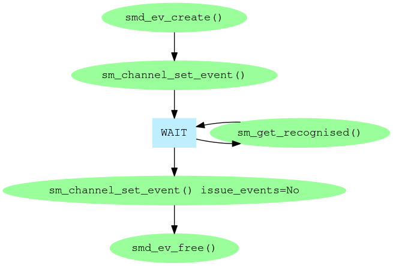
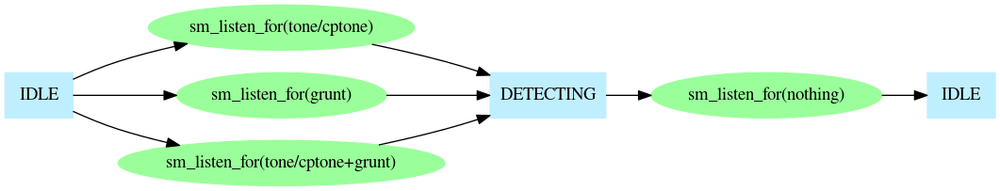
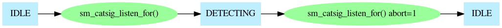
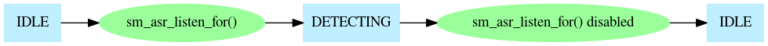

Prosody can perform several types of detection. The types available are:
They all report their results through sm_get_recognised().
To perform detection you need a Prosody channel which can perform input. This means one of the following:
The input from the channel must also have been connected appropriately. See Prosody Guide - how to use datafeeds for how to do this.
Firstly, the overall view of detection in general: you need to use a Prosody event so that you can wait for results. In principle, you could associate this with the channel after starting a detector, or disassociate it from the channel while a detector is still running, but it is recommended that you associate the event with the channel before doing any detection and disassociate it from the channel only when all detections have been disabled.

It is possible to perform more than one kind of detection simultaneously on the same channel. The only combination not allowed is simultaneous tone and call-progress detection. The different types of detection are quite independent of one another. The first type is controlled by sm_listen_for(). It controls:

Detection of live speakers and answering machines is controlled with sm_catsig_listen_for(). See Prosody application note: Live Speaker Detection for a description of how it works.

Detection of spoken words is controlled with sm_asr_listen_for().

When no detection is in progress, the recognition event associated with the channel is permanently signalled, so any thread waiting on it will be woken up. This is convenient when the thread which disables a form of detection is not the thread which waits for detection results, because it provokes the waiting thread into action, when it can take into account the change.
If you want to detect a tone that is not in the pre-defined repertoire, you can configure your own repertoire of tones. See the documentation for sm_listen_for() for details of how to do this.